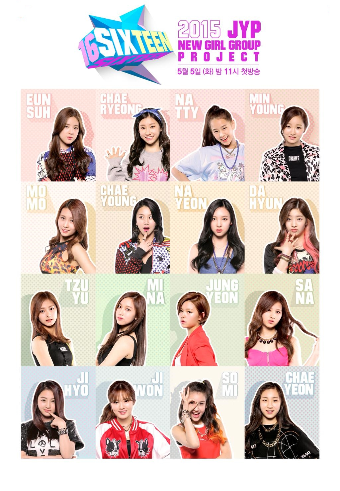

TWICE
홈
프로필
앨범
팀결성과정
데뷔일자
팀 결성 과정

행복 그리고 슬픔
각 미션때 마다 대결을 펼쳐 [마이너]와 [메이저] 멤버들이 자리를 체인지하는데, 이 때 중요한 장치로 제작진이 고안해낸 것이 [메이저] 멤버의 목에 걸린 메이저목걸이를 승격되는 [마이너] 멤버가 잡아 뜯는 방식이다. 이 부분은 꽤 드라마틱한 느낌을 준다. 뜯거나 뜯길때.. 각 멤버들의 표정을 보면 개개인의 개성이 들어나서 인상적이다.
이전 페이지
다음 페이지